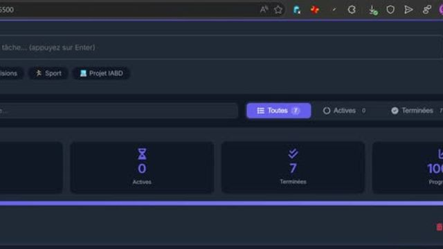
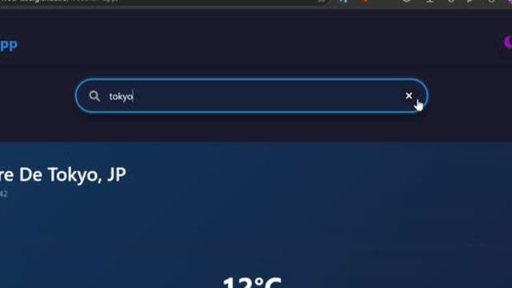
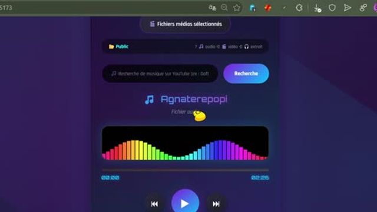
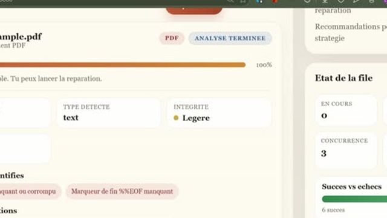

~/videos
Démonstrations
Des démos courtes, de l'interface au modèle en action. Les vidéos s'ouvrent sur Google Drive.
To-Do List Pro
Présentation de l'application de gestion de tâches : CRUD, export multi-formats, mode sombre, statistiques et musique d'ambiance.

Regarder sur Google DriveWeatherApp
Application météo professionnelle avec prévisions précises, graphiques interactifs, mode sombre, export multi-formats (JSON, CSV, PDF) et géolocalisation automatique.

Regarder sur Google DriveSentiment Analysis
Présentation du pipeline complet d'analyse de sentiments : prétraitement du texte, vectorisation TF-IDF, entraînement de 3 modèles (Logistic Regression, Naive Bayes, Random Forest) et évaluation des performances avec 88.6% d'accuracy.
TransformerAGNews
Présentation du pipeline complet de classification d'articles de presse avec un encodeur Transformer implémenté from scratch : tokenization, positional encoding, multi-head self-attention, entraînement sur le dataset AG News et évaluation des performances avec 91.9% d'accuracy.
DJ Audio Player
Présentation du lecteur audio/vidéo : lecture locale (31 formats), recherche YouTube, extraction audio MP3, visualiseur DJ animé et contrôles avancés.

Regarder sur Google DriveTaskHub Pro
FullStackPrésentation de l'application de gestion de tâches collaborative : tableaux Kanban drag & drop, sous-tâches, pièces jointes, authentification JWT, collaboration en temps réel avec Socket.io, modes sombre/clair et tableau de bord statistiques.
FileRepair
Présentation de l’application FileRepair : upload de fichiers corrompus, analyse détaillée, réparation ou récupération partielle, suivi en temps réel, dashboard et téléchargement du fichier traité.

Regarder sur Google DriveMailCraft
Présentation complète de la plateforme MailCraft : création d'emails par drag-and-drop, import de templates professionnels, gestion des campagnes avec planification, et tableau de bord analytique avec métriques en temps réel.
Cosmic Codex
Présentation immersive de la bibliothèque de code Cosmic Codex : exploration 3D d'une galaxie de planètes-langages, navigation entre les snippets, recherche et filtrage multi-langages, gestion des favoris, et interface responsive.
Meme Generator
Présentation de l'application fullstack : création de mèmes (texte haut/bas), galerie interactive, likes, commentaires, profils utilisateurs, authentification JWT et partage social.
CycleCare v2
Présentation complète de l'application de suivi du cycle menstruel : tableau de bord, calendrier interactif, journal des symptômes, assistant IA (Gemini) avec proxy sécurisé, et déploiement multi-plateforme (Web, Android, Windows).
NeonTube
Présentation complète du téléchargeur vidéo NeonTube : interface néon cyberpunk, téléchargement en haute définition (jusqu'à 4K), gestion des playlists, galerie de vidéos avec miniatures, authentification sécurisée, et versions Windows (EXE) et Android (APK).
Gestion Bibliothèque
Présentation complète de l'application : authentification multi-rôles, gestion des livres et auteurs, emprunts, réservations, dashboard avec graphiques Chart.js, espace profil et interactions.